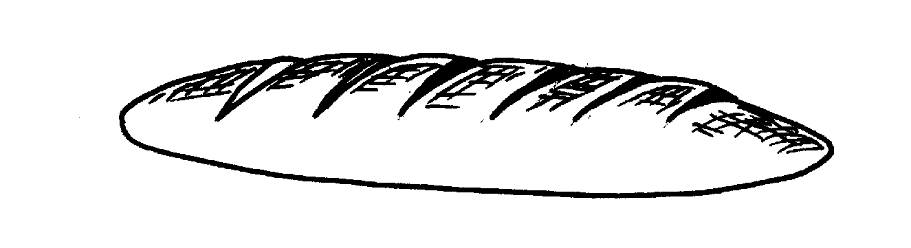

Austrian Striezel
French Bread
Hamburger Buns
Hot Cross Buns
Hulda's Rolls
Lucia Cats
Monkey Bread
Nova Scotia Bread
Pizza
Portuguese Bread
Rolls
Steamed Buns
A World of Breads, Dolores Casella

Preheat oven to 400º.
1 cake yeast
1 1/2 cups lukewarm water
4 cups sifted flour (semolina or unbleached)
1 tablespoon sugar
2 teaspoons salt
Dissolve yeast in water. Sift the dry ingredients, stir them into the yeast mixture, and work the dough with your hands until it will absorb no more flour. Knead the dough on a slightly floured board until it is no longer sticky.
Place the dough in a buttered bowl, cover, and let rise until doubled. Then punch it down and turn it out onto a floured board. Divide into 2 parts. Shape each piece into a long narrow loaf.
Place the loaves on a greased cookie sheet that has been sprinkled with cornmeal, cover, and let rise again. With a sharp knife, slash the tops of the loaves with diagonal cuts about 1" apart and 1/4" deep. Brush tops with egg-white glaze and bake in a 400º oven for 35 to 40 minutes. Brush again with glaze about 5 minutes before loaves are done. Makes 2 small loaves or 1 large one.